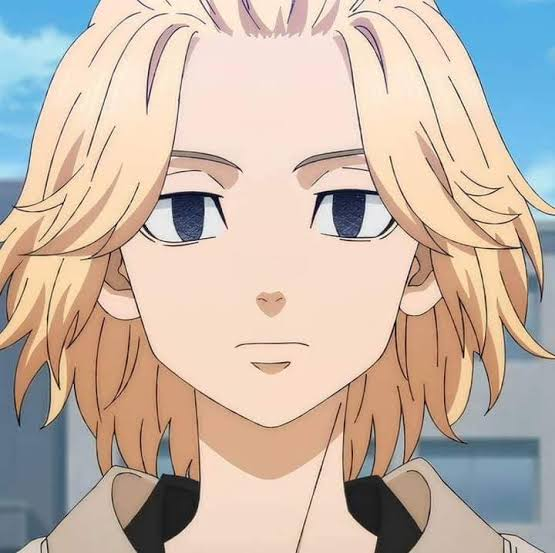
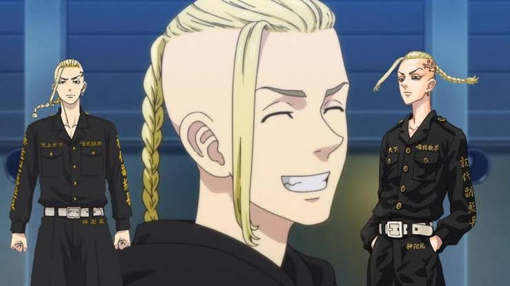
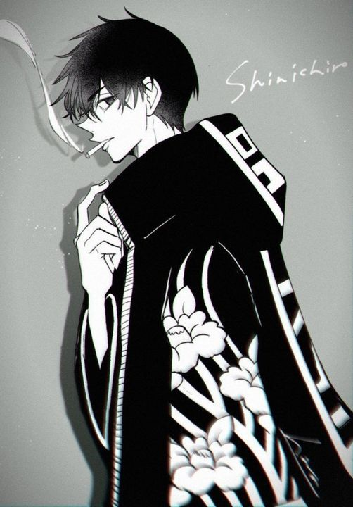

"Is there anyone here who thinks Toman should give up? There isn't, right?"
The story follows Takemichi Hanagaki as he travels back in time 12 years to save his middle school girlfriend.
In web terms, Takemichi triggers his time travel when he clicks handshake() with Naoto.
Check out my DOM tree screenshot saved as dom-tree.png in the project directory!